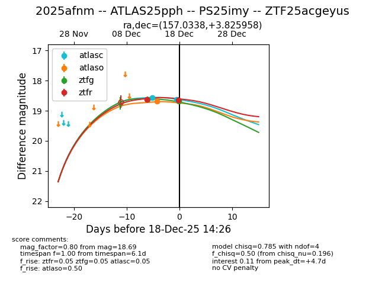
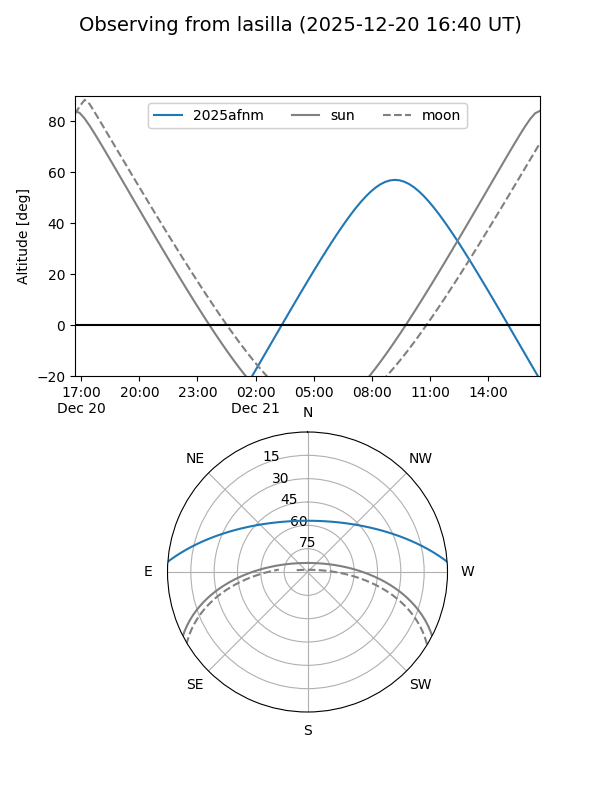
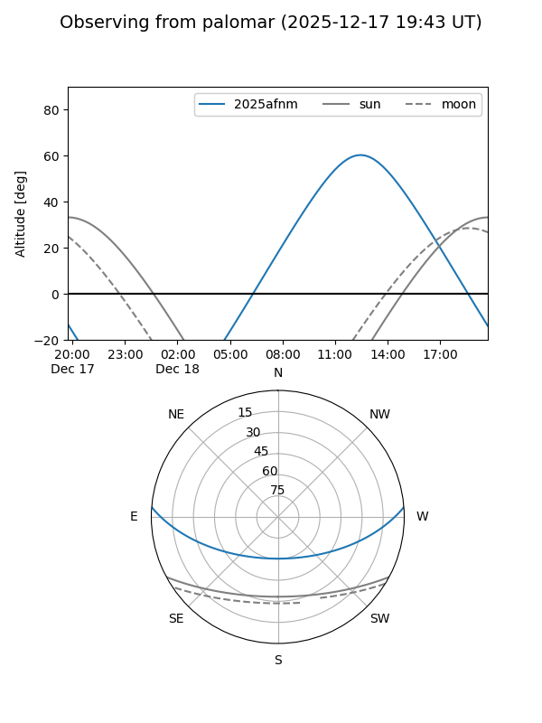
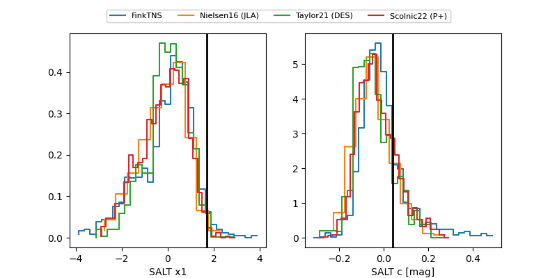

2025afnm
Target 2025afnm at 2025-12-22 20:06
Aliases and brokers:
FINK: fink-portal.org/ZTF25acgeyus
Lasair: lasair-ztf.lsst.ac.uk/objects/ZTF25acgeyus
ALeRCE: alerce.online/object/ZTF25acgeyus
TNS: wis-tns.org/object/2025afnm
YSE: ziggy.ucolick.org/yse/transient_detail/2025afnm
alt names
ZTF25acgeyus (ztf,fink_ztf)
2025afnm (tns,yse)
PS25imy (panstarrs)
ATLAS25pph (atlas)
Coordinates:
equatorial (ra, dec) = 157.0338,+3.82596
equatorial (HMS+DMS) = 10:28:08.11,+03:49:33.45
galactic (l, b) = (240.8535,+48.62688)
Flags:
Photometry:
last atlasc=18.62, atlaso=18.68, ztfg=18.92, ztfr=18.94
2 atlasc, 1 atlaso, 4 ztfg, 4 ztfr detections
Lightcurve

Visibility


Additional plots
